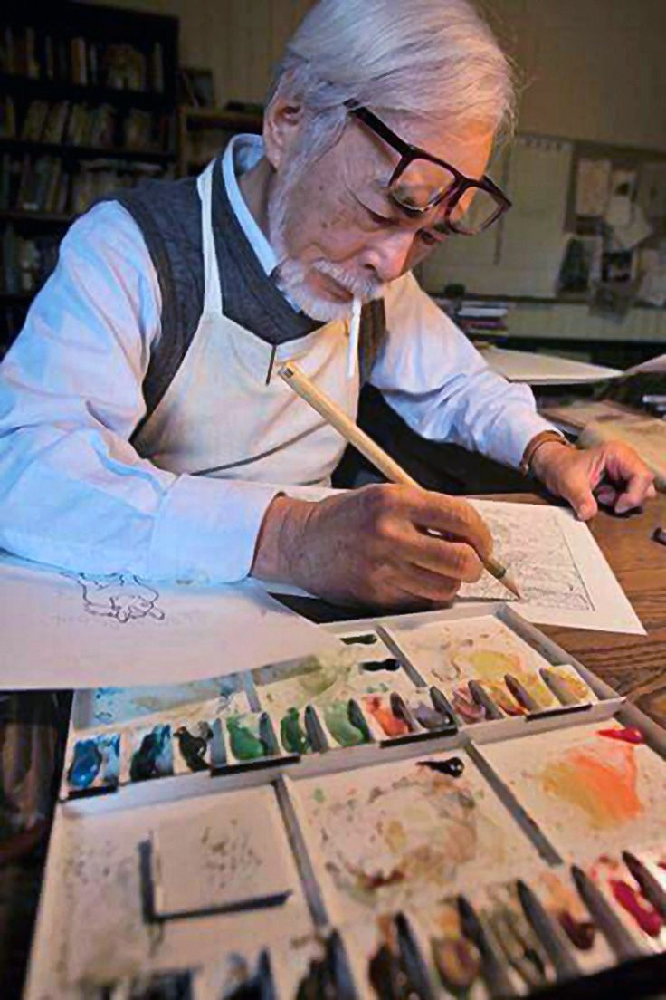
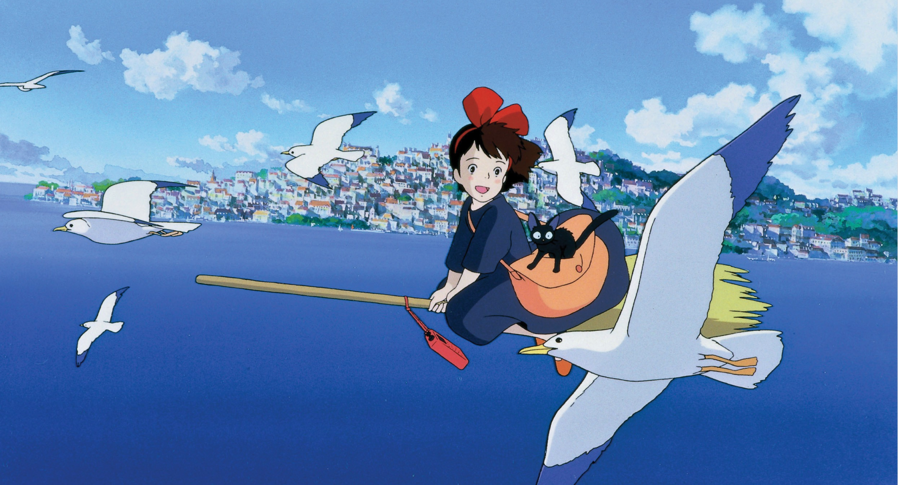
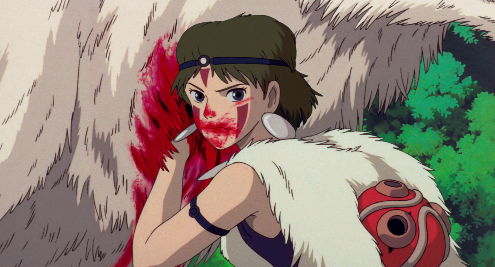
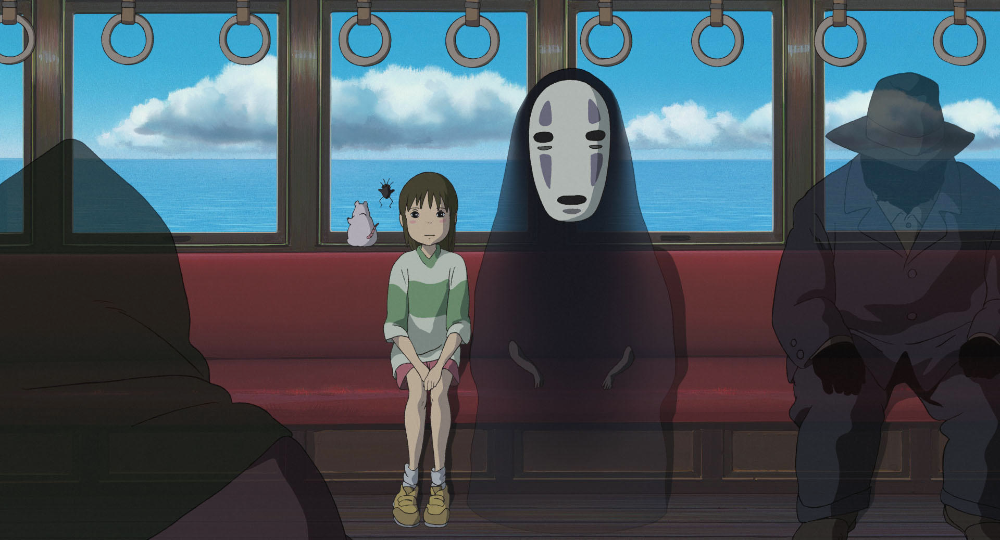
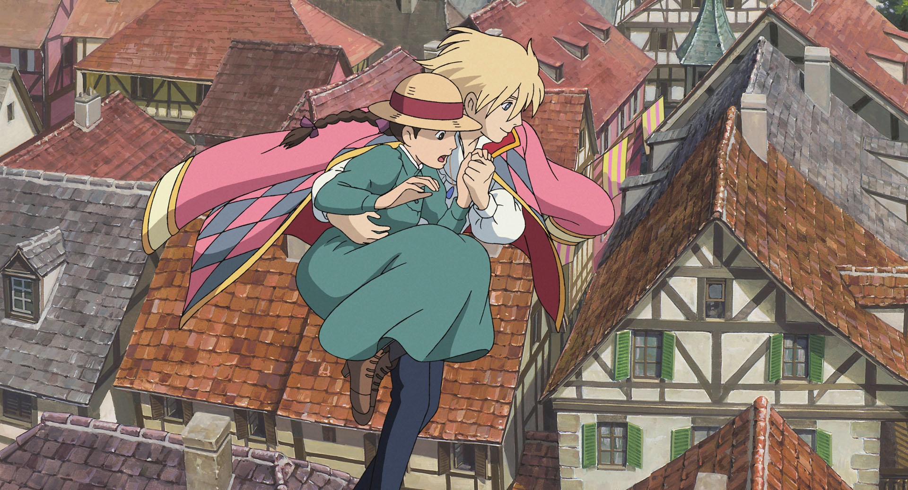

Hayao Miyazaki at his studio
Hayao Miyazaki, (born 5 January 1941) is a Japanese animator, director, producer, screenwriter, author, and manga artist. A co-founder of Studio Ghibli, a film and animation studio, he has attained international acclaim as a masterful storyteller and as a maker of animated feature films, and is widely regarded as one of the most accomplished filmmakers in the history of animation.
I do believe in the power of story. I believe that stories have an important role to play in the formation of human beings, that they can stimulate, amaze and inspire their listeners.
- Hayao Miyazaki, Midnight Eye interview



